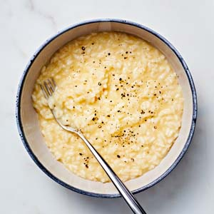
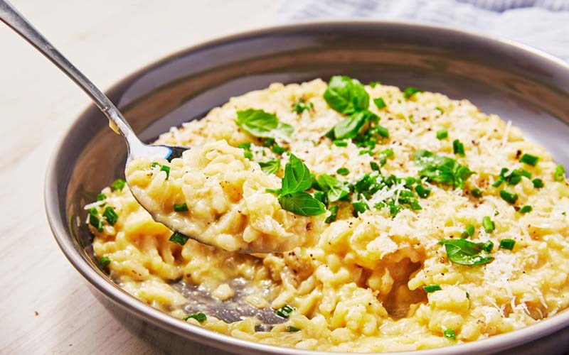

International Dishes Recipe 8:
Risotto
- Dish Description:
- Risotto is a northern Italian rice dish cooked with broth until it reaches a creamy consistency. The broth can be derived from meat, fish, or vegetables. Many types of risotto contain butter, onion, white wine, and parmesan cheese. It is one of the most common ways of cooking rice in Italy. Saffron was originally used for flavour and its signature yellow colour. Risotto in Italy is normally a first course served before the main course, but risotto alla milanese is often served with ossobuco alla milanese as a main course.

Ingredients:
- 4 cups chicken stock
- 1 tablespoon vegetable oil
- 3 tablespoons butter, divided
- 1 medium shallot, chopped (about 1/2 cup; or 1/2 small onion, chopped)
- 1 1/2 cups Arborio rice
- 1/2 cup dry vermouth (or dry white wine)
- 1/4 cup grated Parmesan cheese
- 1 tablespoon Italian parsley, chopped
- Kosher salt, to taste
Directions:
- In a medium saucepan, heat the stock to a simmer. Lower the heat so the stock stays hot while you cook the risotto.
- In a large, heavy-bottomed saucepan, heat the oil and 1 tablespoon of the butter over medium heat.
- When the butter has melted, add the chopped shallot or onion. Sauté for 2 to 3 minutes or until slightly translucent.
- Heating the oil and chopped shallot.
- Add the rice to the pot and stir it briskly with a wooden spoon so that the grains are coated with the oil and melted butter.
- Sauté for another minute or so, until there is a slightly nutty aroma. But don't let the rice turn brown.
- Adding the rice and stirring it with a wooden spoon. Add the vermouth or wine and cook while stirring, until the liquid is fully absorbed.
- Adding the vermouth and stirring it with a wooden spoon. Add a ladle of hot chicken stock to the rice and stir until the liquid is fully absorbed.
- When the rice appears almost dry, add another ladle of stock and repeat the process.
- Adding the chicken stock and stirring it with a wooden spoon. Continue adding stock, a ladle at a time, for 20 to 30 minutes or until the grains are tender but still firm to the bite, without being crunchy (al dente).
- Adding more stock and stirring with a wooden spoon. Stir in the remaining 2 tablespoons of butter and the Parmesan cheese and parsley. Season to taste with kosher salt.
- Stirring in butter, Parmesan cheese, and parsley. Serve in bowls and enjoy.